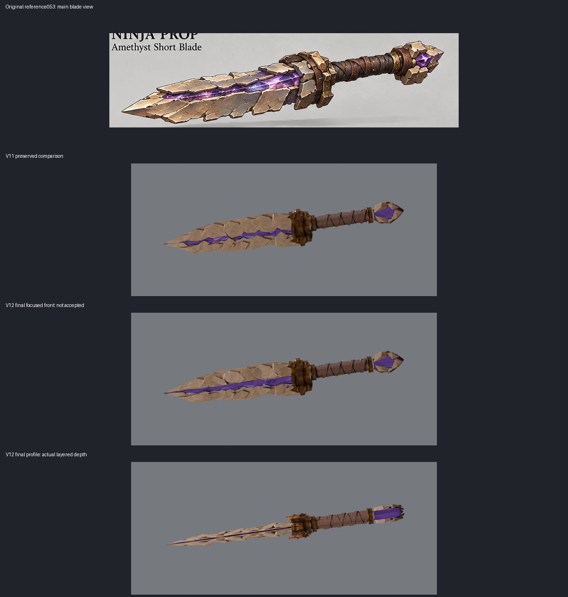
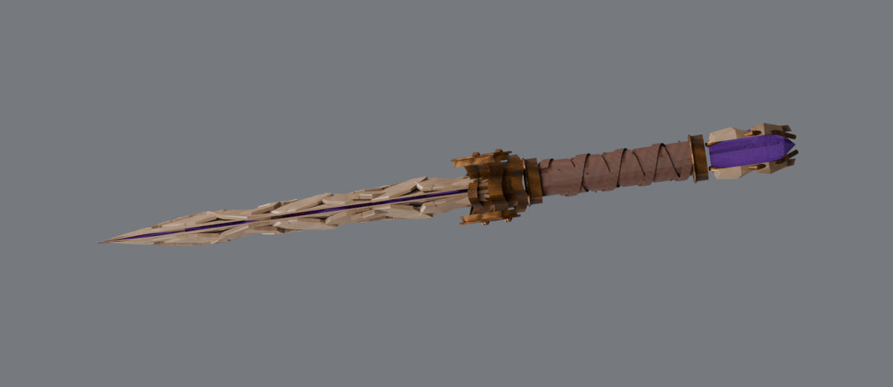

Broader aperture and unequal mineral layer depth. Exact reference appearance remains unaccepted: flat strip-like crystal, broad tiled stone, cylindrical cuff and simplified pommel remain visible gaps.

Unchanged original053 · Blender source · GLB · Evidence and limits
